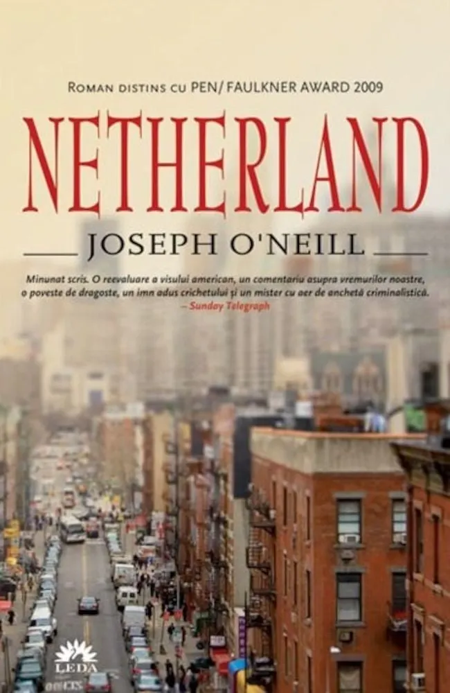

Nomen Omen vs Luigi Di Castri

The terrorist attack centred on New York, 9.11.01, is only stale news if it didn’t touch you in the flesh. It would not be hyperbole to say that it cut Luigi Di Castri’s life in half. It ended the lives of countless Iraqis and Afghans—but that was in the aftermath. The path that led Luigi to New York was a jaunty one in a world that now seems heavy with fatalism. He called it serendipity, happenstance, chance and luck. In Hertfordshire, where he was born, he did not take to formal education and bowed out when he was 17. However, outside the class room, he worked up a passion for computers. He was in on the ground floor at the time when they would change the way we lived, did business, shopped and gossiped.
Luigi worked in Information Technology in the UK and abroad. Expatriation was only partly a career move and was driven just as much by his delight in mastering the instrument of change. He was not a man to let the reign of big tech make a greedy robot of him. In the 1990s he took time out to earn a university degree in English. The topsy-turvy approach to educational bureaucracy has left a speaker with the enthusiasm of an autodidact. His passion was not only for computers. He moved into the Finance Sector and Investment Banking. He explains his getting a job in New York by his old buddy serendipity. But chance isn’t something the big banks rely on. It was Luigi’s competence that put him in an office in the now reduced shade of the Twin Towers.
Along with the general public, the last straw for Luigi was the solution offered to the Financial Crisis of 2008. The banks had been irresponsible and had to be bailed out. The public purse was emptied to save them, and the age of austerity began. We were asked to be heroic as public services were gutted and the homeless multiplied. The latter were called “the unhoused” to make the cement they slept on softer.
Luigi gave the school system another whirl and qualified as a secondary school teacher in the UK.
He laboured in that pimply adolescent vineyard until five years ago when he took early retirement and found his way to Lecce. Nomen omen had won out. His knowledge of Italian was sketchy, “an open wound,” he says, but in any case an embarrassment beside his pure wool Italian name.
The account Luigi gave of September 11, 2001 wasn’t a journalist’s or a historian’s. He simply described his day. He lived in the neighbourhood and went to his place of work beside the Twin Towers. His mood was upbeat. The move to New York’s cornucopia # of interests had been the answer to a dream for him and his young family. He settled in his office with a too-big coffee embalmed in styrofoam. The work day began as usual with a minor contretemps. A colleague said a tiny plane had crashed into the other side of one Tower. He thought it was probably one of their billionaire bosses engaged in his airborne hobby. The conversation turned to an expert’s pronouncement that the Twin Towers were as indestructible as a mountain.
Luigi’s day is confined to his sight lines. Uncertainty is the keynote. No, that wasn’t a tiny tourist plane. Information is hard to come by as he relives the drama for us of struggling to know what was happening. TV was helpful. The strange modern situation arose of sitting as for evening entertainment and watching in real time an operation meant to annihilate the viewers, yourself. It was like a condemned prisoner being given a lively preview of his execution. Luigi rushed home amidst the rubble. The indomitable young father organised a family walk. When he opened the door, the stench was unbearable, the gritty air unbreathable. White foam-like mist, the contribution of asbestos, was everywhere. The Di Castri family returned to the TV.
Joseph O’Neill, an Irish-Turkish novelist, also resident in New York, wrote Netherland (2008) touching on these events. He makes a crucial distinction between public and personal trauma. Luigi’s trauma was personal, familial. New York was a living hell to get away from as soon as he could. There was talk of revenge among the traumatised man-in-the-street. But it was the powerful with diverse aims that shaped the public trauma until it destroyed Iraq and got bogged down in a twenty-year unwinnable war in Afghanistan. Ironically, while we listened to Luigi, stunned by his emotions, another War on Terror was in full spate in Palestine. Joseph O’Neill, no prisoner of nationalism, had this advice for Americans concerning 9/11, ”Just get over it.”
